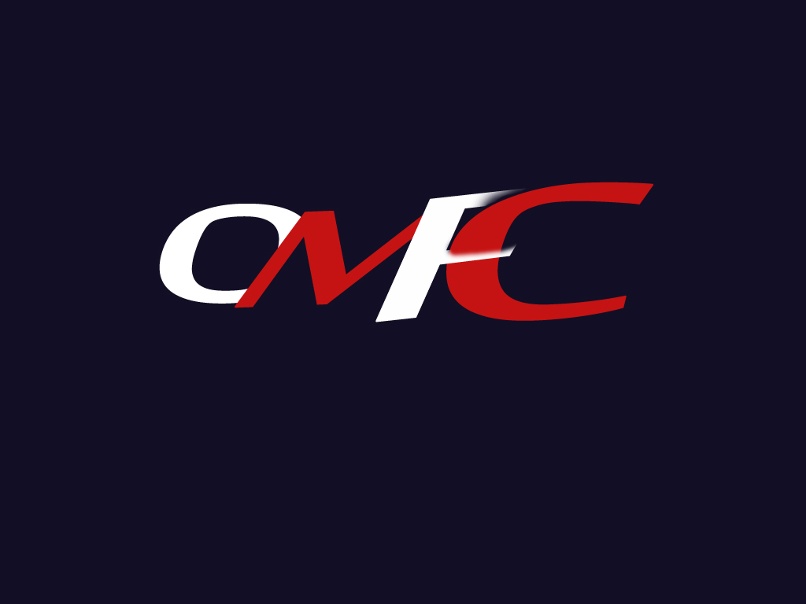

|  |
ԻՆՔՆԱԿԵՆՍԱԳՐՈՒԹՅՈՒՆ
ԱՍԼԱՆՅԱՆ ՎԱՉԱԳԱՆ
Հեռ.` (+374 98) 85 76 58
Էլ. հասցե`vachagan.aslanyan.1992@mail.ru
Ծննդյան ամսաթիվը`29.11.1992թ.
Ծննդավայրը` Հայաստան, ք. էջմիածին
Ազգությունը` հայ
|
ԿՐԹՈՒԹՅՈՒՆԸ |
| Սեպտեմբեր, 2009 – հունիս, 2013 Երևանի պետական ճարտարագիտական համալսարան Ինֆորմատիկա և հաշվողական տեխնիկա ֆակուլտետ
|
ԱՇԽԱՏԱՆՔԱՅԻՆ ՓՈՐՁԸ |
| Օգոստոս, 2015 – հունիս, 2013 << Նորակերտի միգնակարգ դպրոց>> ՊՈԱԿ
|
ՄԱՍՆԱԳԻՏԱՑՈՒՄԸ |
| Էլեկտրոնային հաշվողական միջոցների նախագծում և տեխնոլոգիա
|
ԼԵԶՈՒՆԵՐԻ ԻՄԱՑՈՒԹՅՈՒՆԸ |
| Հայերեն, ռուսերեն, անգլերեն(զարգացման փուլում)
|
ՀԱՄԱԿԱՐԳՉԱՅԻՆ ՀՄՏՈՒԹՅՈՒՆՆԵՐԸ |
| MS Windows XP,7,8, Linux, MS Office, Internet, Adobe Photoshop, CorelDRAW
HTML5, CSS, Bootstrap, Codeigniter
|